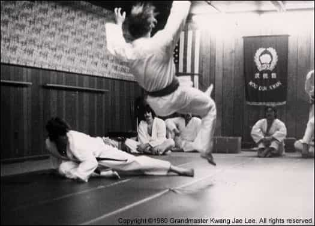

< < < Back
Do Someone A Favor By Criticizing Their Faults – Return Of Kings
Modern society teaches people to rarely if ever criticize another person. When people are in mentor positions where they have to tell a pupil how they are doing, they are encouraged to give out criticism that is nine parts “you are doing awesome” and one part “but it could be a little better if.” However, in many cases this is not the best way to encourage someone to do better.
I am not saying that negative criticism is the best in all cases. Every person and situation is different so you should approach each one differently. Never giving positive encouragement will cause a person to burn out and quit over time, but using praise too often, especially when it is undeserved praise, can be just as devastating.
In my kung fu class a few years ago one of the recently appointed student instructors tried to do a spinning leg sweep on me during sparring. It didn’t take out my leg, but it did kind of hurt (which was much more than I could do at the time and he started training at about the same time as me), so I congratulated him on how his sweep had gotten much better after the sparring was over. After I did this one of the younger instructors came up and told him in these exact words,
“Your sweeps suck, [pointing at me] because he is still standing.”
About a year later, I was sparring with him again and it didn’t take long for me to learn that if I wanted to stay on my feet I would need to jump back and get out of the way any time I saw him preparing for a sweep. A person on the street who didn’t know him wouldn’t stand a chance.

There is no doubt in my mind that my instructor’s biting criticism helped him out much more than my beta positive encouragement. Negative criticism gave my friend real incentive to do better and left him to figure out on his own how to do better instead of someone holding him by the hand.
Another personal example is when I was taking piano lessons as a young kid about eight or ten years old. My mother signed me up for piano lessons with a hippie, new age piano teacher who flooded me with positive encouragement. However, she was completely unwilling to ever tell me that I was doing anything wrong. Useful advice was replaced by encouraging me to feel the music and let it come out naturally.
Since none of my mistakes were ever being corrected, I really sucked at playing the piano. In fact after two years of playing the piano I never learned that I was supposed to hold a quarter note for twice as long as an eighth note. I had no concept of timing whatsoever so I played every note on the page as a quarter note even if it was an eighth, half, or sixteenth note.

At that young age I had a nagging suspicion that something was wrong because the music I played didn’t sound like the music played by professional musicians at all. My mother and my piano teacher could easily see that I was terrible at playing the piano so they decided that unceasing and uncompromising positive reinforcement was the best way to keep me from becoming discouraged and quitting.
Despite my doubts I didn’t believe at my young age that my mother and my nice piano teacher would lie to me so I came to the logical conclusion that I simply had a different “style” than all the other piano players. I kept doing what I was doing since I didn’t see any reason to change. If someone had come up to me and said…
“Hey dumbass, you’re playing that wrong. You are supposed to hold those notes longer than those other notes.”
…then I would have thanked him and possibly gone on to become a decent pianist, a skill that would no doubt come in quite handy.
Never be afraid to tell anyone, especially a child, when they are doing something incorrectly. Refusing to harshly correct someone who is on the wrong path in order to spare their feelings is one of the most selfish things that you can do. You are dooming that person to a life of mediocrity and never reaching their full potential.
Read Next: The Golden Rule Works


{kind=link}